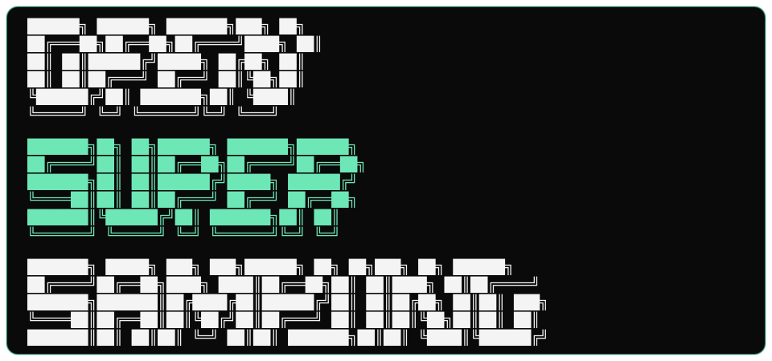

training status loading
v6.1 Pico
waiting for metrics.json
Cite this result
BibTeX
Plain text

OpenSuperSampling
OpenSuperSampling is training a unified game reconstruction pipeline for super-resolution and frame extrapolation from one temporal model.
v6 notes: HAT-Tiny is the small HAT backbone; GS-STVSR and EWA describe the temporal canvas math; Net2Net is the expansion path; Charbonnier trains regression; Bicubic, DLSS, FSR, and XeSS are comparison anchors; PSNR and LPIPS stay as quality gauges; SDR ships first, HDR follows.
waiting for metrics.json
computing from data.json…
Recent rendered comparisons (LR · bicubic · model · GT · |error| · features) for any tracked run. Click any strip to open the lightbox compare view.
Open a run to compare training, measurement, and superseded references. Run names like srcnn-v6.2-pico-002 are frozen forever — see the (i) button for the three-layer versioning convention (project semver / architecture iteration / run identifier).
The canonical v6 design is the source of truth for the persistent Gaussian canvas, covariance-resampled rasterizer, cross-attention fusion path, and OSS-FX frame extrapolation plan.
Open canonical memo
Live registry of OSS research claims. Forward-looking hypotheses (H001+) with status; validated discoveries (D-series) backed by data on disk. Updated whenever a hypothesis transitions state. Source: docs/research/hypotheses/*.md + docs/research/2026-05-08-validated-discoveries-log.md.
Measured + reproducible findings on disk. Data backs every claim. Suitable for citation.
Novel claims pending validation. Each has a test plan + acceptance gate. Status: untested, in-progress, validated, refuted.